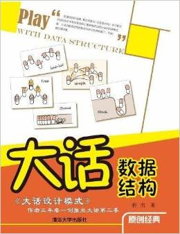
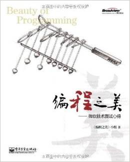

准备

《大话数据结构》内容简介：数据结构介绍、算法推导大O阶的方法；顺序结构与链式结构差异、栈与队列的应用；串的朴素模式匹配、KMP模式匹配算法；二叉树前中后序遍历、赫夫曼树及应用；图的深度、广度遍历；最小生成树两种算法、最短路径两种算法；拓扑排序与关键路径算法；折半查找、插值查找、斐波那契查找等静态查找；稠密索引、分块索引、倒排索引等索引技术；二叉排序树、平衡二叉树等动态查找；B树、B+树技术，散列表技术；冒泡、选择、插入等简单排序；希尔、堆、归并、快速等改进排序。
《剑指Offer：名企面试官精讲典型编程题（纪念版）》是为纪念本书英文版全球发行而推出的特殊版本，在原版基础上新增大量本书英文版中的精选题目，系统整理基础知识、代码质量、解题思路、优化效率和综合能力这5 个面试要点。全书分为8 章，主要包括面试流程：讨论面试每一环节需要注意的问题；面试需要的基础知识：从编程语言、数据结构及算法三方面总结程序员面试知识点；高质量代码：讨论影响代码质量的3个要素(规范性、完整性和鲁棒性)，强调高质量代码除完成基本功能外，还能考虑特殊情况并对非法输入进行合理处理；解题思路：总结编程面试中解决难题的有效思考模式，如在面程中遇到复杂难题，应聘者可利用画图、举例和分解这三种方法将其化繁为简，先形成清晰思路再动手编程；优化时间和空间效率：读者将学会优化时间效率及空间换时间的常用算法，从而在面试中找到最优解；面试必备能力：总结应聘者如何充分表现学习和沟通能力，并通过具体面试题讨论如何培养知识迁移、抽象建模和发散思维能力；综合面试案例：总结哪些面试举动是不良行为，而哪些表现又是面试官所期待的行为；英文版面试题增补，优选久经欧美知名企业面试考验的经典题目，帮助国内读者开阔视野、增补技能。

《编程之美:微软技术面试心得》是一本让人着迷的书！阅读起来。有些题目的内容会引起强烈的共鸣，尤其是那些自己非常熟悉并且又深知解答的题目；也有一些题目让我异常惊诧，原来除了我所知道的解答思路之外，还有更好的解答以及更深层次的原因。还有一些题目是从来没想到过的。阅读过程是一次愉快的享受，也是脑细胞持续活跃的过程。自计算机与软件出现以来，在近半个世纪里，软件开发所能衍生出的无限创意，深深吸引着全世界的青年。在二进制的世界里，这帮年轻的程序员充分发挥自己的热情和想像力，仅仅通过对“1”和“0”的互换操作，他们辟地开天，恣意汪洋地创造出一个又一个的奇迹。今天，前几代“青年”积累构建的虚拟世界正在深刻地改变我们的现实生活。软件开发过程的复杂程度已经足以媲美传统的工业生产。前人堆积如山的开发经验和规则，令象牙塔里的学子们望而生畏。今天软件学院的学生们站在巨人的肩膀上，用最流行的语言和工具武装到了牙齿，但似乎缺少了前辈们的热情，也忘记了编程的乐趣所在——发现问题，分析问题，解决问题，寻找更优的解法，总结规律，抽象出算法的过程以及由此产生的成就感。
《编程之美:微软技术面试心得》收集了大约60道微软技术面试题，作者试图通过书中妙趣横生的问题和详细的解说以及面试者的各种小故事，告诉读者微软需要什么样的技术人才，重视什么样的能力，如何甄别人才。但它更深层的意义在于引导读者思考，帮助读者重拾通过编程探索未知世界的乐趣。